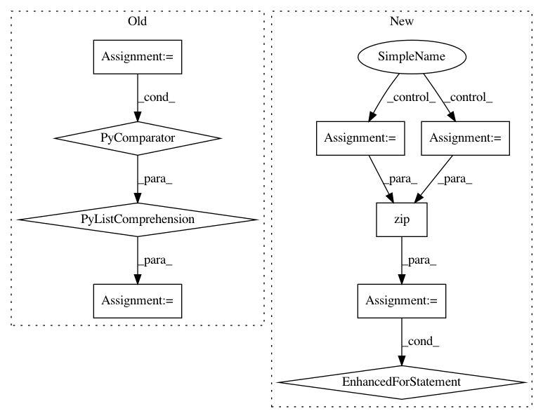

d97188ee62bc0627235578485c5df7d3245fa1ed,example6.py,,,#,14
Before Change
bc_client = BertClient(show_server_config=False, port=5557, port_out=5558)
// hardcoded law_ids
laws = [184, 336, 314, 351, 224, 132, 158, 128, 223, 308, 341, 349, 382, 238, 369, 248, 266, 313, 127, 340, 288, 172,
209, 243, 302, 200, 227, 155, 147, 143, 261, 124, 359, 343, 291, 241, 235, 367, 393, 274, 240, 269, 199, 119,
246, 282, 133, 177, 170, 310, 364, 201, 312, 244, 357, 233, 236, 264, 225, 234, 328, 417, 151, 135, 136, 348,
217, 168, 134, 237, 262, 150, 114, 196, 303, 191, 392, 226, 267, 272, 212, 353, 315, 205, 372, 215, 350, 275,
385, 164, 338, 292, 159, 162, 333, 388, 356, 375, 326, 402, 397, 125, 395, 290, 176, 354, 185, 141, 279, 399,
192, 383, 307, 295, 361, 286, 404, 390, 294, 115, 344, 268, 171, 117, 273, 193, 418, 220, 198, 231, 386, 363,
346, 210, 270, 144, 347, 280, 281, 118, 122, 116, 360, 239, 228, 305, 130, 152, 389, 276, 213, 186, 413, 285,
316, 245, 232, 175, 149, 263, 387, 283, 391, 211, 396, 352, 345, 258, 253, 163, 140, 293, 194, 342, 161, 358,
271, 156, 260, 384, 153, 277, 214]
laws_str = [str(x) for x in laws]
def get_encodes(x):
// x is `batch_size` of lines, each of which is a json object
After Change
tf.logging.set_verbosity(tf.logging.INFO)
with open("README.md") as fp:
data = [v for v in fp if v.strip()]
bc = BertClient()
list_vec = bc.encode(data)
list_label = [0 for _ in data] // a dummy list of all-zero labels
// write tfrecords
with tf.python_io.TFRecordWriter("tmp.tfrecord") as writer:
def create_float_feature(values):
return tf.train.Feature(float_list=tf.train.FloatList(value=values))
def create_int_feature(values):
return tf.train.Feature(int64_list=tf.train.Int64List(value=list(values)))
for (vec, label) in zip(list_vec, list_label):
features = {"features": create_float_feature(vec), "labels": create_int_feature([label])}
tf_example = tf.train.Example(features=tf.train.Features(feature=features))
writer.write(tf_example.SerializeToString())
// read tfrecords and build dataset from it
num_hidden_unit = 768
def _decode_record(record):
In pattern: SUPERPATTERN
Frequency: 3
Non-data size: 9
Instances
Project Name: hanxiao/bert-as-service
Commit Name: d97188ee62bc0627235578485c5df7d3245fa1ed
Time: 2018-12-02
Author: hanhxiao@tencent.com
File Name: example6.py
Class Name:
Method Name:
Project Name: keras-team/keras
Commit Name: 94dbc3042f5a85b399f5ce2859d4e8fbafd235b9
Time: 2017-07-06
Author: me@taehoonlee.com
File Name: tests/keras/backend/backend_test.py
Class Name:
Method Name: check_single_tensor_operation
Project Name: keras-team/keras
Commit Name: 94dbc3042f5a85b399f5ce2859d4e8fbafd235b9
Time: 2017-07-06
Author: me@taehoonlee.com
File Name: tests/keras/backend/backend_test.py
Class Name:
Method Name: check_two_tensor_operation